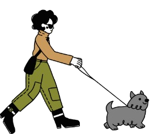
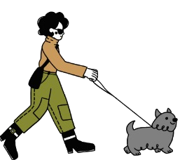

Servicio de Paseo


| Dias | Lunes | Martes | Miercoles | Jueves | Viernes | Sabado |
|---|---|---|---|---|---|---|
| Horarios | 9 a 12 - 16 a 20 | 9 a 12 - 16 a 20 | 9 a 12 - 16 a 20 | 9 a 12 - 16 a 20 | 9 a 12 - 16 a 20 | 9 a 12 - 14 a 20 |
| Paseador | Maximiliano A. Flores | Luis G. Panduro | Maria Becerra | Marcelo Perez | Melanie A. Quevedo | Angel E. Gallardo |
Maximiliano A. Flores - Tel. 388-4265789
Luis G. Panduro - Tel. 388-4256789
Marcelo Perez - Tel. 388-4273428
Maria Becerra - Tel. 388-4289945
Angel. E. Gallardo - Tel. 388-4294577
Melanie A. Quevedo - Tel. 388-4304201